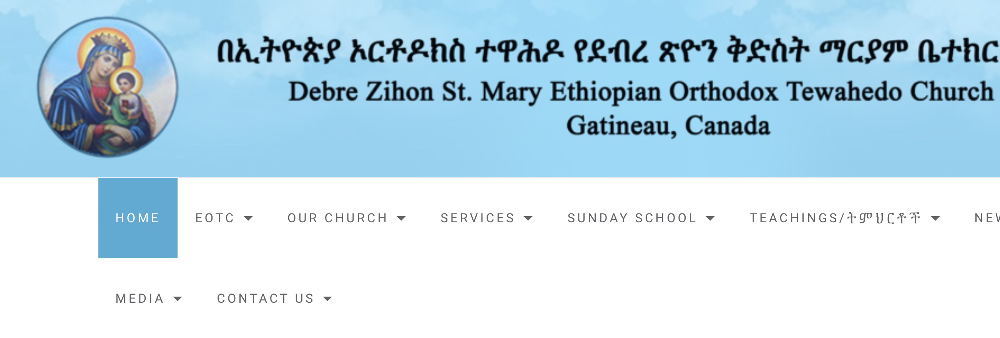

<!DOCTYPE html>
<html lang="en-us"></html>
 <head>
    <meta charset="UTF-8">
    <link rel="stylesheet" href="./assets/css/style.css">
    <title>My Portfolio</title>
 </head>
 <body>
     <!-- Header section Structure starts here -->
    <header>
        <h1>Thomas Habtemariam</h1>
        <nav>
          <ul>
             <li><a href="#about">About</a></li>
             <li><a href="#projects">Portfolio</a></li>
             <li><a href="/">Contact</a></li>
             <li><a href="/">Resume</a></li>
          </ul>
        </nav>
    </header>
    <!-- Header section Structure ends here -->

    <!-- Hero/Avatar Structue starts here -->

    <section class="hero">
        <div>
        
        </div>
    </section>
    <section>
        <div class="sub-title">
        <h2>"Full-Stack Web Developer- on the run"</h2>
        </div>
    </section>
    <!-- Hero/Avatar Structue ends here -->


    <!-- About-me section Structure starts here -->
    <section>
        <h1 class="section-title border-1">About Me</h1>
    </section>
    <section class="intro">  
        <p>
            I  worked and studied in Civil Engineering as a good rated graduate in 2008. Till 2016, I participated in  design of multi-span structral 
            bridges and also worked on construction of  Asphalt pavement roads. Moving into another part of the world gave me a great opportunity to 
            join the science in computers leading to work in diffrent organizations specially web projects. I am now a Tech. support assistant, website 
            administrator and social secretary in a diplomatic office found in Ottawa. I've a passion for computer science, information technology and on 
            diffrent technical aspects of modern technology.</p>
           <br>
        <p> I  have a slef-confident and interact with any kind of poeple as i had so may great opportunities to works in team in technical, managiarial 
            and diplomatic level. </p>
            <br>
        <p> Well being said about of proffessionalism, I have a great tendency of leaning new expriances from diffrent aspects of fields; I have had an 
            expriance working with numbers like accounting and income Taxes, transportaion bussines, photography and video editing. As matter of fact, 
            photography is my part-time job now.</p>
</section>

<section>
    <h1 class="section-title border-2">Projects</h1>
    
</section>

<section>
    <div>
    <h3>"goomla CMS"</h3>
    </div>
</section>


    
  


</body>
</html>


